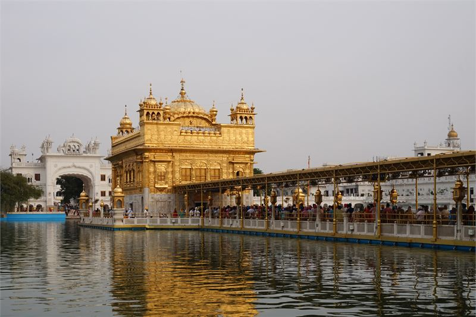
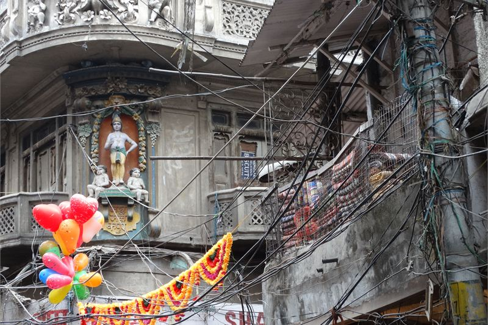

How these hotels were researched
▼- Rates: compared across more than one booking platform on the same day, quoted as a range with the month checked. Not a quote, and they move.
- Guest reviews in bulk: looking for complaints that repeat across many months, not single bad nights.
- Location: checked against a map, measured to the thing you actually came for.
- Real cost of entry: taxes, compulsory meal plans, transfers, and what is not included in the headline rate.
- What I could not confirm is said plainly in the text rather than filled in.
Amritsar revolves around Sri Harmandir Sahib (The Golden Temple). The central travel decision here is simple: stay within the pedestrian-only Heritage Street precinct surrounding the temple, or stay further out in the modern city near GT Road or Mall Road.
Staying near the Golden Temple allows walking to the complex at 3:30am for Palki Sahib ceremonies without arranging taxis. Staying further out gives quieter rooms, easier car parking, and larger hotel grounds, but requires navigating auto-rickshaw traffic for every temple visit.
Rates listed below were checked in July 2026 across major booking channels, reflecting year-round steady pilgrimage demand.
Taj Swarna, Amritsar

Taj Swarna is a modern luxury property located along the outer circular road in Basant Avenue, roughly 5.5 km from the Golden Temple. It features contemporary glass design, spacious rooms, an outdoor swimming pool, and Jiva Spa.
Rooms feature large glass windows, plush bedding, and marble bathrooms. Grand Trunk dock serves refined Punjabi specialties like Amritsari kulcha and dal makhani alongside international menus.
Indicative rates range from Rs 8,800 to Rs 24,000 per night. What you pay for is quiet sleep, easy vehicle parking, and luxury amenities. The trade-off is distance. Reaching Heritage Street takes 20 minutes in an auto-rickshaw or hotel cab.
I could not confirm whether the SGPC online registration system for Sarai rooms operates reliably for international passport holders without local SIMs.
| Indicative rate | Rs 8,800 to Rs 24,000 per night |
|---|---|
| Rates checked | July 2026 |
| Distance to Temple | 5.5 km to Golden Temple (20-min ride) |
| Best for | Luxury business or leisure stays with full pool and spa facilities |
In its favour
- Modern soundproofed luxury rooms away from dense old city crowds
- Excellent outdoor swimming pool and full spa facilities
Worth knowing first
- Requires vehicle transport for every visit to the Golden Temple
- Traffic congestion near Hall Gate during peak evening hours
- The Golden Temple is open around the clock and the area never fully quietens, including overnight
Heritage Street and Old City Hotels

Heritage Street is a pedestrianized paved avenue connecting Town Hall to the Golden Temple plaza, lined with red sandstone building facades and statues. Hotels here put you 2 to 5 minutes' walk from the temple complex.
Mid-range boutique hotels along Heritage Street offer air-conditioned rooms from Rs 3,500 to Rs 8,200 per night. Staying here means you can step out at midnight or dawn to witness the shimmering gold reflection on Amrit Sarovar lake without transport hassles.
Because Heritage Street is vehicle-free, taxis drop guests at Saragarhi parking garage, requiring a 400-metre walk with suitcases or hiring an electric rickshaw.
| Indicative rate | Rs 3,500 to Rs 8,200 per night |
|---|---|
| Rates checked | July 2026 |
| Distance to Temple | 200m to 500m (2 to 5 min walk) |
| Best for | Immediate walking access to Golden Temple and Jallianwala Bagh |
In its favour
- Unbeatable proximity for pre-dawn and late-night temple visits
- Walking distance to Jallianwala Bagh memorial and iconic dhabas
- You can walk to the complex for the pre-dawn ceremony without arranging a taxi
Worth knowing first
- No vehicle drop-off directly outside hotel doors
- Pedestrian street noise and continuous pilgrim crowds
Free Pilgrim Accommodation (SGTB Sarai Complex)
This is the option to skip: Outer luxury ring-road hotels for 12-hour visits. If you are stopping in Amritsar for a brief overnight visit before an early flight, booking a distant luxury hotel on GT Road is impractical. You will waste two hours in city traffic for a 45-minute temple walk.
For pilgrims and budget travelers, the SGPC operates seven Sarai complexes (such as Sri Guru Ram Das Niwas) offering thousands of free or nominal rooms (Rs 200 to Rs 800 for AC rooms) directly behind the temple.
Rooms are simple with basic beds and attached bathrooms, assigned on a first-come, first-served basis at Sarai booking counters. Everyone is welcome regardless of religion or background.
What it costs to actually get there
Amritsar is well-connected by road, rail, and air, but moving from transit hubs to your hotel involves negotiating aggressive transport touts. Sri Guru Ram Dass Jee International Airport (ATQ) sits 11 km from the city center. A prepaid airport taxi or app-based cab to a ring-road hotel like Taj Swarna costs roughly Rs 500. However, reaching Heritage Street hotels requires a secondary transfer, as cars cannot enter the pedestrian zone.
From Amritsar Junction railway station, auto-rickshaws dominate the transfer routes. An auto to the Golden Temple plaza should cost no more than Rs 100 to Rs 150, but drivers frequently quote Rs 300 to arriving tourists. Cycle rickshaws are cheaper but significantly slower through the dense Hall Bazaar traffic.
When to go, and what changes
The Golden Temple is visually stunning year-round, but Amritsar's weather swings wildly. Peak summer months of May and June push temperatures past 42°C, making the marble walkways around the Sarovar uncomfortably hot barefoot, even with the protective jute carpets rolled out by volunteers. Hotel rates drop slightly during this intense heat.
Conversely, winter months from December to February bring biting cold nights dropping to 4°C, along with heavy morning fog that can completely obscure the temple dome until midday. Diwali and Gurpurab (typically in autumn) see the entire complex illuminated with thousands of lamps and spectacular fireworks, but hotel availability vanishes months in advance and room rates double or triple.
| Indicative rate | Free dormitory beds; Rs 200 to Rs 800 for private rooms |
|---|---|
| Rates checked | July 2026 |
| Location | Directly behind Golden Temple complex |
| Watch for | Basic amenities; counter queues during weekend rushes |
Planning your Amritsar visit
Combine your Golden Temple visit with the afternoon Wagah Border lowering-of-the-flags ceremony (30 km west toward Pakistan border). Allocate time for culinary stops at Kesar Da Dhaba for parathas and Ahuja Milk Bhandar for lassi.
Combining northern spiritual and heritage centers? Read our Delhi area guide or review riverfront stays in our Varanasi riverfront stays guide.
Practical Amritsar travel notes
- Head coverings are mandatory inside the Golden Temple complex for all visitors. Scarves are sold outside for Rs 10 to Rs 20, or provided free in collection bins.
- Langar (free community kitchen) serves wholesome vegetarian meals to over 100,000 people daily. Visitors of all faiths are welcome to sit on hall carpets or volunteer in the kitchen.
- Wagah Border ceremony begins around 4:30pm in winter and 5:30pm in summer. Taxis leave Amritsar by 3:00pm. Carry your original passport for security checks at border stadium gates.
- Sri Guru Ram Dass Jee International Airport (ATQ) is located 11 km northwest of the city center, taking 25 minutes by taxi.